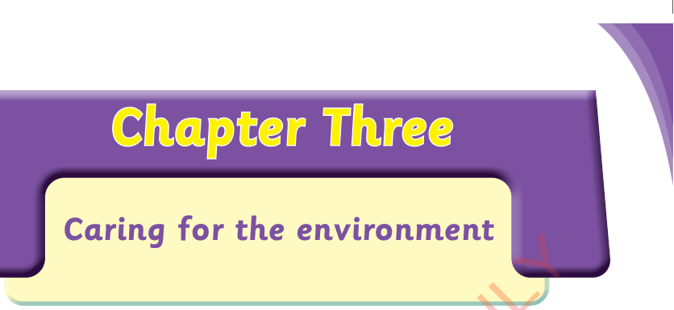

Chapter Three

Caring for the environment
I know items used for caring for the environment

I use various items to care for my environment.
Activity 1
Use ICT tools to watch videos or view pictures of various items used for caring for the environment. Identify the items used for caring for the environment that you observed.
Observe the following pictures, then, answer the questions that follow.